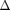
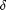
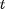
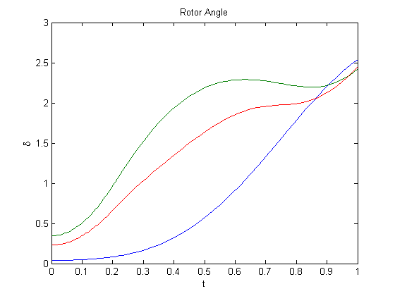

EXAMPLE: Simulate the System with Classical Model
This example shows how to use the QP_SimulateSystem function to simulate a power system using classical generator model.
Version . Qiu Qin, December 11, 2014. All Rights Reserved.
Contents
Load Data File
Run the data file to load power system data. Please refer to the data file for detail description of the data format.
clear;
run('QP_9B_data3m9b.m');
Load constant variables. Theses constant variables are used to refer to a line in the 9 bus system.
QP_9B_LineDefinition;
Rename the data matrices.
generator = mac_con; lineData = line(:,:);
Simulate the System Starting from Stable Equilibrium Point
Specify the configuration of the system. In this example, a fault-on system is simulated from the stable equilibrium point. the system configuration is a fault a midpoint of line 5-7.
% The line short to ground faultyLine = LINE57; % Fault distance from the bus faultDistance = 0.5; % No line is removed from the system removeLine = 0;
Specify the simulation duration:
simulateTime = 12/60;
Use the QP_SimulateSystem function to simulate the system:
[t1, delta1, omega1] = ... QP_SimulateSystem( bus, lineData, generator, faultyLine, faultDistance, ... removeLine, simulateTime);
The simulation results are the rotor angle  and rotor speed %\omega$ as functions of time . Please refer to the function file for detail description of the function.
Simulated the System Starting from a Specific Operating Point
The following is an example of specifying the initial state for the simulation. Suppose the last state of the above simulation is used as the initial state:
delta0 = delta1(end,:)'; omega0 = omega1(end,:)';
The post-fault system can be simulated by using the configuration of removing the faultyline.
removeLine = faultyLine;
Specify the simulation duration:
simulateTime = 48/60; [t2, delta2, omega2] = ... QP_SimulateSystem( bus, lineData, generator, 0, 0, ... removeLine, simulateTime, delta1(end,:)',omega1(end,:)');
Concatenating Results from Two Simulations
The results from the two simulations can be concatenated and ploted
figure plot([t1;t1(end)+t2],[delta1;delta2]); xlabel('t'); ylabel('\delta'); title('Rotor Angle'); figure plot([t1;t1(end)+t2],[omega1;omega2]); xlabel('t'); ylabel('\omega'); title('Rotor Speed');